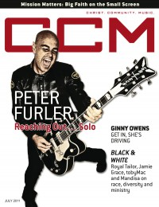

CMnexus: Contemporary Christian culture, music, and media.
|
|
Peter FurlerOn the cover|  | July 2011
CCM Digital | Media coverage:- Aug 1997 in CCM "Conversations: The Breath of God", by Jim Long
- Sep 2000 in CCM "On The Beat: Circus Life", by Andy Argyrakis
- Nov 2003 in CCM "Behind The Scenes With Peter Furler", by David McCreary
- Jan 2005 in CCM "Truth & Consequences", by Lizza Connor
- Sep 2006 in Ignite Your Faith "The Walls Came Down", by Andy Argyrakis
- Jul 2011 in CCM Digital "Reaching Out: Peter Furler Goes Solo", by Matt Conner
- Dec 2011 in CCM Digital "Mission Matters: After all these years, artists are still honoring the call", by Grace S. Aspinwall, Caroline Lusk
- Jan 2012 in CCM Digital "Winter Wonder Jam"
- Feb 2012 in HM "Live Report: WinterJam 2012", by Nicole Murphy
- Feb 2012 in CCM Digital "CCM: Community: Peter Furler"
- 15 Mar 2014 in CCM Digital "Peter Furler Band: Simplicity Loves Company", by Katrina Beckham
- 15 Apr 2014 in CCM Digital "Tour Spotlight: The Roadshow Tour, Chicago Theatre, Chicago, IL", by Andy Argyrakis
Albums & reviews:2011: On Fire2014: Sun and Shield2014: Peter Furler Christmas with David Ian Award Summary (Nominations / Wins)Dove Awards1999 Dove Awards- Song: "Entertaining Angels"
2004 Dove AwardsBooks about Peter Furler- "Testimonies: Interviews With Christian Artists" in The Billboard Guide to Contemporary Christian Music (Barry Alfonso, 2002)
Published articles:1 article credited in CCM: 2005. |